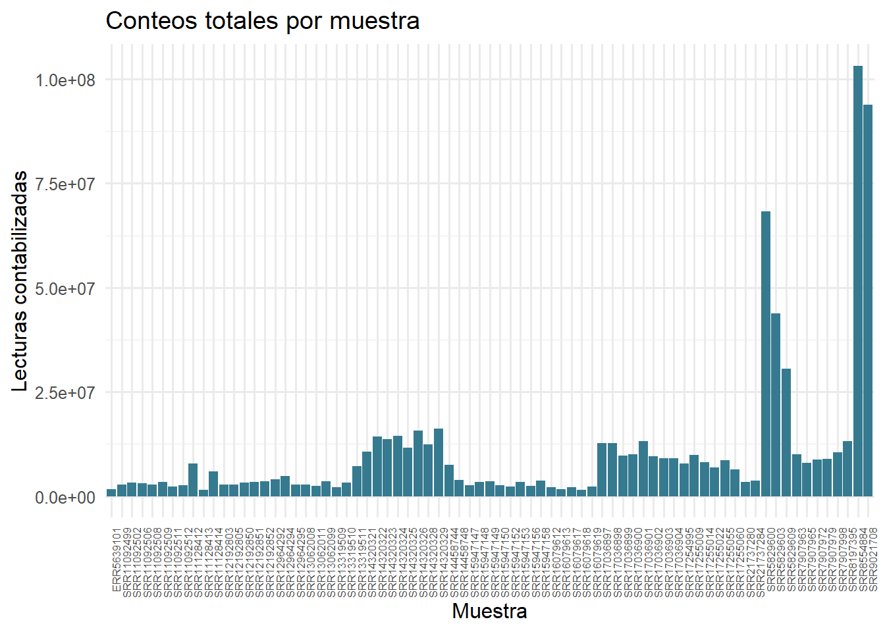
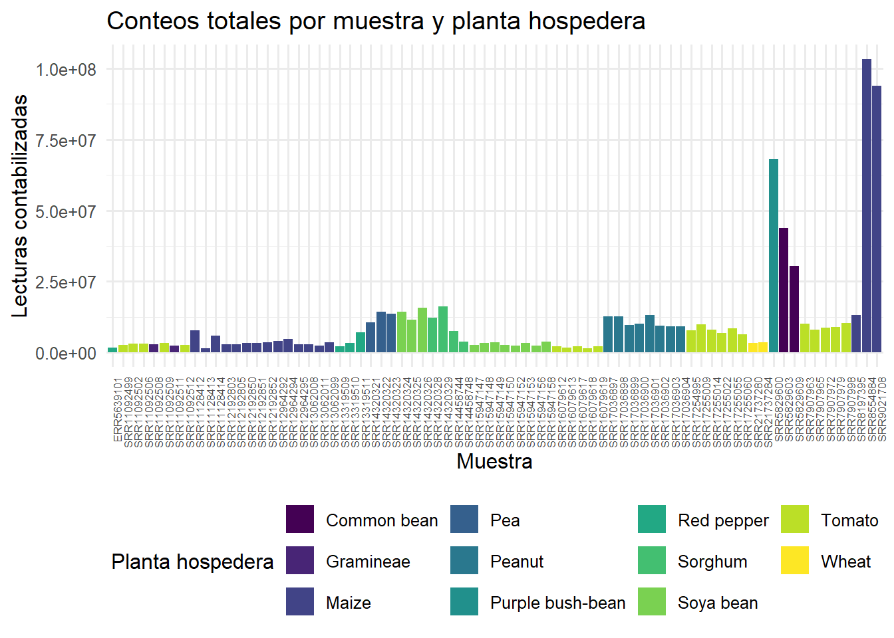
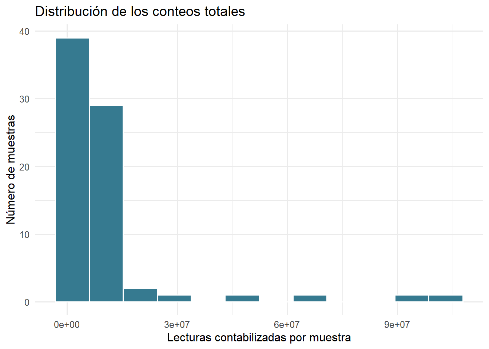
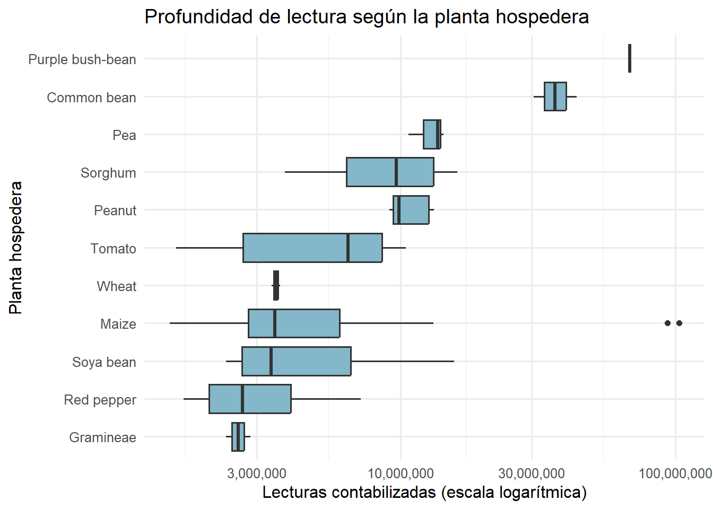
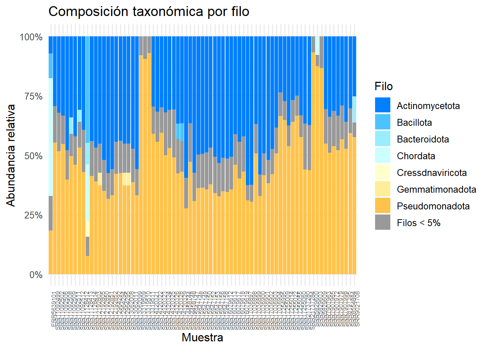
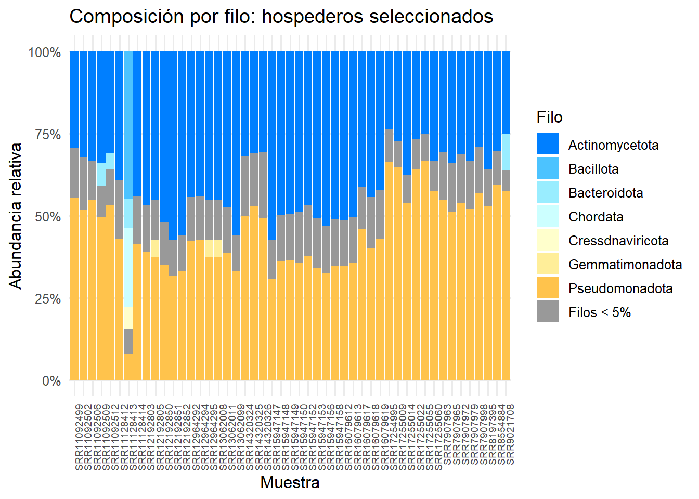
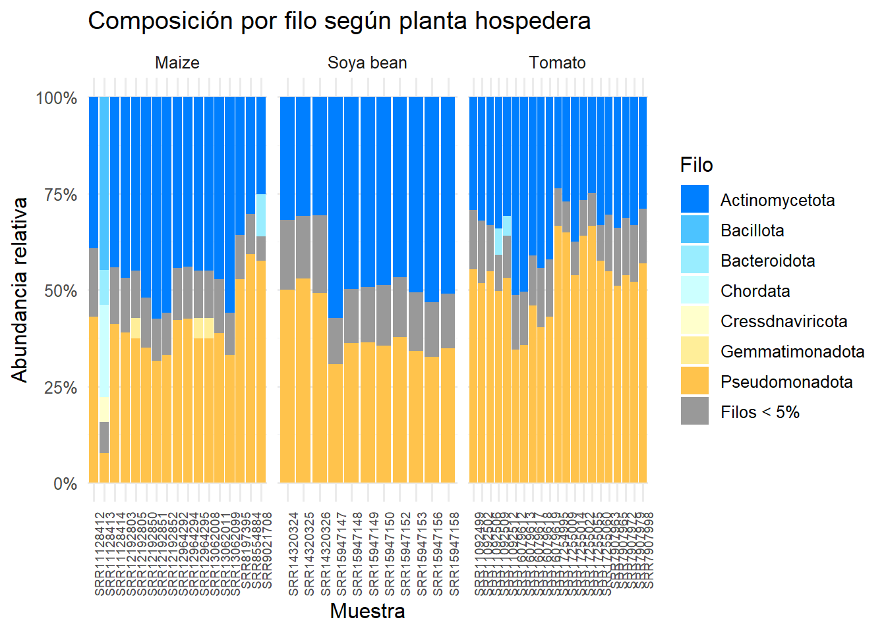
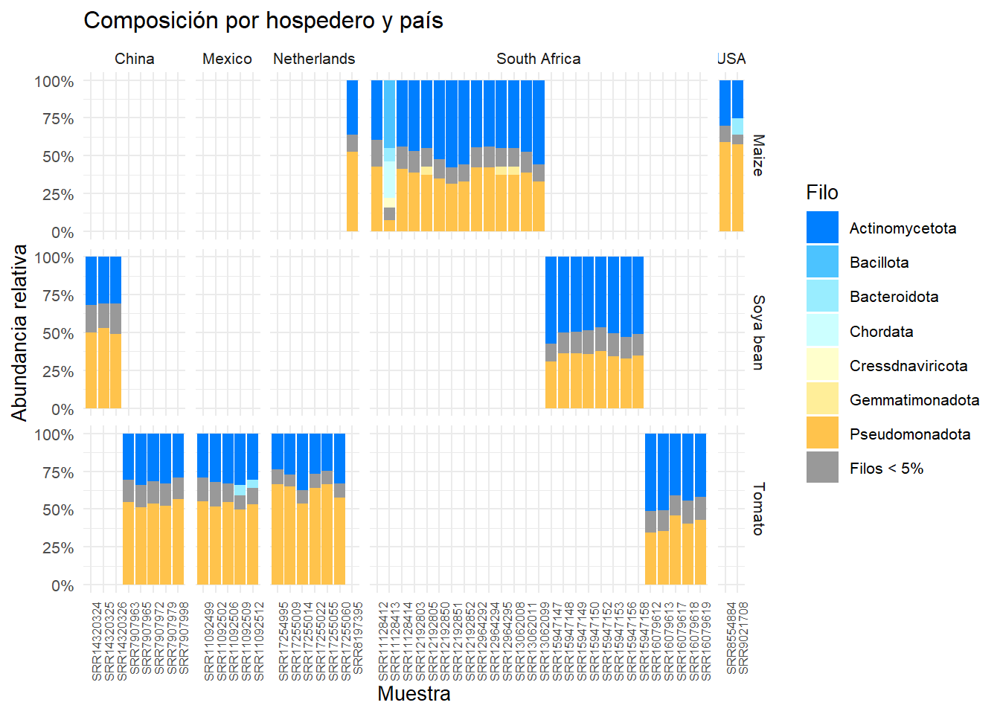
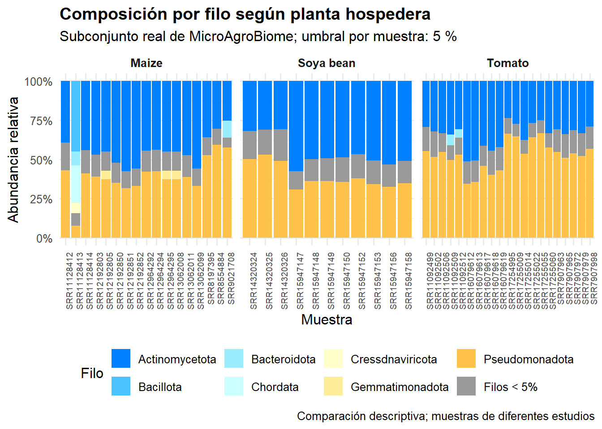

Código
ggplot(tabla, aes(x = variable_x, y = variable_y)) +
geom_col() +
labs(title = "Título informativo", x = "Eje X", y = "Eje Y") +
theme_minimal()En la sesión anterior importamos, limpiamos e integramos un subconjunto de datos reales del proyecto MicroAgroBiome, y construimos tablas de abundancias relativas por género y filo. Ahora aprenderemos a comunicar lo que contienen esas tablas mediante gráficos reproducibles. No utilizaremos phyloseq: trabajaremos con dplyr, tidyr y ggplot2.
Objetivos. Reconocer las capas de ggplot2; distinguir datos, estéticas y geometrías; elegir gráficos según la pregunta; comparar muestras y hospederos con facetas; ordenar categorías mediante factores; ajustar colores y etiquetas; y exportar figuras. Las comparaciones serán descriptivas: las muestras proceden de diferentes estudios y pueden diferir en metodología y profundidad de secuenciación.
Un gráfico no es una instrucción única: se construye sumando capas con +. Los componentes esenciales son:
| Componente | Pregunta que responde | Ejemplo |
|---|---|---|
| Datos | ¿Qué tabla contiene las observaciones? | ggplot(profundidad) |
Estéticas (aes()) |
¿Qué variables representan los ejes y los colores? | aes(x = sample_id, y = total_lecturas) |
Geometría (geom_*()) |
¿Cómo se dibujan los datos? | geom_col() |
Facetas (facet_*()) |
¿Separamos los datos en paneles? | facet_wrap(~ host_name) |
Escalas (scale_*()) |
¿Cómo se representan valores, colores y etiquetas? | scale_y_continuous() |
| Etiquetas y tema | ¿Cómo facilitamos la lectura? | labs(), theme_minimal() |
La estructura general es:
ggplot(tabla, aes(x = variable_x, y = variable_y)) +
geom_col() +
labs(title = "Título informativo", x = "Eje X", y = "Eje Y") +
theme_minimal()La estética aes(fill = host_name) asocia una variable con colores; en cambio, geom_col(fill = "#367A90") asigna un color fijo. Un mismo gráfico puede tener mapeos globales en ggplot() y mapeos locales dentro de una geometría.
Utilizaremos la misma carpeta data_raw/datos_rizosfera/ de la sesión anterior. Los archivos conteos_taxonomia_rizosfera.tsv y metadata_rizosfera.csv son los mismos: no hay que descargar otra base.
library(readr)
library(dplyr)
Adjuntando el paquete: 'dplyr'The following objects are masked from 'package:stats':
filter, lagThe following objects are masked from 'package:base':
intersect, setdiff, setequal, unionlibrary(ggplot2)
# Resultados procesados en la sesión anterior
generos_5 <- read_tsv("results/generos_5.tsv")Rows: 209 Columns: 4── Column specification ────────────────────────────────────────────────────────
Delimiter: "\t"
chr (3): sample_id, host_name, taxon_final
dbl (1): abundancia_relativa
ℹ Use `spec()` to retrieve the full column specification for this data.
ℹ Specify the column types or set `show_col_types = FALSE` to quiet this message.filos_5 <- read_tsv("results/filos_5.tsv")Rows: 233 Columns: 4
── Column specification ────────────────────────────────────────────────────────
Delimiter: "\t"
chr (3): sample_id, host_name, taxon_final
dbl (1): abundancia_relativa
ℹ Use `spec()` to retrieve the full column specification for this data.
ℹ Specify the column types or set `show_col_types = FALSE` to quiet this message.totales_muestra <- read_tsv("results/totales_muestra.tsv")Rows: 75 Columns: 2
── Column specification ────────────────────────────────────────────────────────
Delimiter: "\t"
chr (1): sample_id
dbl (1): total_lecturas
ℹ Use `spec()` to retrieve the full column specification for this data.
ℹ Specify the column types or set `show_col_types = FALSE` to quiet this message.# Metadatos originales
metadata_riz <- read_csv(
"data_raw/datos_rizosfera/metadata_rizosfera.csv"
)Rows: 75 Columns: 22
── Column specification ────────────────────────────────────────────────────────
Delimiter: ","
chr (15): sample_id, experiment, assay_type, seq_type, plant_part, host_name...
dbl (7): latitude, longitude, year, depth_all_biom, depth_rank, fraction_re...
ℹ Use `spec()` to retrieve the full column specification for this data.
ℹ Specify the column types or set `show_col_types = FALSE` to quiet this message.En la sesión anterior calculamos el total de lecturas contabilizadas por muestra y lo guardamos en totales_muestra.
Esta tabla contiene dos columnas:
sample_id: identificador de la muestra.total_lecturas: suma de los conteos taxonómicos de esa muestra.Para representar los resultados según la planta hospedera o el país, necesitamos incorporar esas variables desde la tabla original de metadatos.
profundidad <- totales_muestra %>%
left_join(
metadata_riz %>%
select(sample_id, host_name, country, crop_system),
by = "sample_id",
relationship = "one-to-one"
)
stopifnot(!anyNA(profundidad$host_name))
glimpse(profundidad)Rows: 75
Columns: 5
$ sample_id <chr> "ERR5639101", "SRR11092499", "SRR11092502", "SRR1109250…
$ total_lecturas <dbl> 1621386, 2714607, 3195156, 3058423, 2841362, 3348466, 2…
$ host_name <chr> "Red pepper", "Tomato", "Tomato", "Tomato", "Gramineae"…
$ country <chr> "Denmark", "Mexico", "Mexico", "Mexico", "Mexico", "Mex…
$ crop_system <chr> "Monoculture", "Monoculture", "Monoculture", "Monocultu…Observa que no estamos recalculando la profundidad. Simplemente agregamos información descriptiva a los totales que ya habíamos obtenido.
La tabla profundidad será nuestro punto de partida para construir los primeros gráficos con ggplot2.
La primera pregunta es: ¿cuántas lecturas contabilizadas tiene cada muestra? Ya calculamos total_lecturas, de modo que geom_col() representa directamente esa variable en el eje vertical.
p_profundidad <- ggplot(profundidad, aes(x = sample_id, y = total_lecturas)) +
geom_col(fill = "#367A90") +
labs(title = "Conteos totales por muestra", x = "Muestra",
y = "Lecturas contabilizadas") +
theme_minimal(base_size = 12) +
theme(axis.text.x = element_text(angle = 90, hjust = 1, size = 6))
p_profundidad
¿Por qué geom_col() y no geom_bar()? geom_bar() cuenta filas automáticamente; geom_col() utiliza los valores numéricos de y que ya calculamos. Si aplicáramos geom_bar() a profundidad, contaríamos una fila por muestra, no las lecturas.
p_profundidad_color <- ggplot(profundidad,
aes(x = sample_id, y = total_lecturas, fill = host_name)) +
geom_col() +
scale_fill_viridis_d(option = "viridis") +
labs(title = "Conteos totales por muestra y planta hospedera",
x = "Muestra", y = "Lecturas contabilizadas", fill = "Planta hospedera") +
theme_minimal(base_size = 12) +
theme(axis.text.x = element_text(angle = 90, hjust = 1, size = 6),
legend.position = "bottom")
p_profundidad_color
Los colores indican a qué planta corresponde cada muestra, no la magnitud del conteo. Como hay muchas muestras y hospederos, la figura es difícil de leer: no todos los datos deben mostrarse simultáneamente en una sola gráfica. Más adelante mejoraremos su organización.
La profundidad también puede estudiarse como distribución, sin dibujar 75 etiquetas de muestras. Un histograma agrupa valores numéricos en intervalos; un diagrama de caja resume mediana, cuartiles y posibles valores extremos.
p_hist <- ggplot(profundidad, aes(x = total_lecturas)) +
geom_histogram(bins = 12, fill = "#367A90", color = "white") +
labs(title = "Distribución de los conteos totales",
x = "Lecturas contabilizadas por muestra", y = "Número de muestras") +
theme_minimal(base_size = 12)
p_hist
bins controla el número aproximado de intervalos; binwidth permite fijar su anchura. El aspecto cambia al modificar estos parámetros, pero los datos originales no cambian.
ggplot(
profundidad,
aes(
x = reorder(host_name, total_lecturas, FUN = median),
y = total_lecturas
)
) +
geom_boxplot(fill = "#83B7C9") +
scale_y_log10(labels = scales::label_comma()) +
coord_flip() +
labs(
title = "Profundidad de lectura según la planta hospedera",
x = "Planta hospedera",
y = "Lecturas contabilizadas (escala logarítmica)"
) +
theme_minimal(base_size = 12)
La pregunta ahora es diferente: ¿qué proporción de los conteos de una muestra corresponde a cada filo? Utilizaremos filos_5, que ya contiene abundancias relativas. Con fill = taxon_final, cada segmento representa un filo o la categoría «Otros».
Vamos también a darles un orden a los Filos y géneros para efectos de los plots.
orden_filos <- c(
sort(setdiff(unique(filos_5$taxon_final), "Filos < 5%")),
"Filos < 5%"
)
orden_generos <- c(
sort(setdiff(unique(generos_5$taxon_final), "Géneros < 5%")),
"Géneros < 5%"
)#install.packages("paletteer")
library(paletteer)Warning: package 'paletteer' was built under R version 4.6.2colores <- as.character(
paletteer::paletteer_d("colorBlindness::Blue2Orange8Steps")
)
colores <- c(colores[1:7], "#999999")
p_filos <- ggplot(filos_5,
aes(x = sample_id, y = abundancia_relativa, fill = taxon_final)) +
geom_col(width = 0.9) +
scale_fill_manual(values = colores,
breaks = orden_filos) +
scale_y_continuous(labels = function(x) paste0(round(100 * x), "%")) +
labs(title = "Composición taxonómica por filo",
x = "Muestra", y = "Abundancia relativa", fill = "Filo") +
theme_minimal(base_size = 12) +
theme(axis.text.x = element_text(angle = 90, hjust = 1, size = 6))
p_filos
Aquí cada barra suma 100 %. No utilizamos position = "fill" porque los datos ya son proporciones y su suma por muestra ya es 1. El gráfico muestra composición relativa, no el número absoluto de lecturas ni diferencias estadísticamente significativas.
Para explicar las facetas y los colores, seleccionaremos algunos hospederos sin alterar sus abundancias. El criterio es elegir los tres hospederos con mayor número de muestras en el subconjunto; en caso de empate, el orden alfabético decide.
hospederos_elegidos <- profundidad %>%
count(host_name, name = "n_muestras", sort = TRUE) %>%
arrange(desc(n_muestras), host_name) %>%
slice_head(n = 3) %>%
pull(host_name)
filos_seleccionados <- filos_5 %>%
filter(host_name %in% hospederos_elegidos)
profundidad_seleccionada <- profundidad %>%
filter(host_name %in% hospederos_elegidos)
hospederos_elegidos[1] "Tomato" "Maize" "Soya bean"p_filos_seleccionados <- ggplot(
filos_seleccionados,
aes(x = sample_id, y = abundancia_relativa, fill = taxon_final)
) +
geom_col() +
scale_fill_manual(values = colores,
breaks = orden_filos) +
scale_y_continuous(labels = function(x) paste0(round(100 * x), "%")) +
labs(title = "Composición por filo: hospederos seleccionados",
x = "Muestra", y = "Abundancia relativa", fill = "Filo") +
theme_minimal(base_size = 12) +
theme(axis.text.x = element_text(angle = 90, hjust = 1, size = 7))
p_filos_seleccionados
facet_wrap() crea un panel por categoría; facet_grid() organiza paneles por dos variables. Los paneles mantienen una escala común por defecto, lo que facilita la comparación de proporciones.
p_facet_wrap <- ggplot(filos_seleccionados,
aes(x = sample_id, y = abundancia_relativa, fill = taxon_final)) +
geom_col() +
scale_fill_manual(values = colores,
breaks = orden_filos) +
facet_wrap(~ host_name, scales = "free_x") +
scale_y_continuous(labels = function(x) paste0(round(100 * x), "%")) +
labs(title = "Composición por filo según planta hospedera",
x = "Muestra", y = "Abundancia relativa", fill = "Filo") +
theme_minimal(base_size = 12) +
theme(axis.text.x = element_text(angle = 90, hjust = 1, size = 7))
p_facet_wrap
scales = "free_x" permite que cada panel muestre solo sus identificadores de muestra; la escala vertical sigue siendo común. Esto es especialmente útil porque las muestras tienen nombres largos.
facet_grid(): dos variables de metadatosUsaremos host_name y country, pero no todas las combinaciones están necesariamente representadas. Una celda vacía significa que no hay observaciones para esa combinación en el subconjunto, no que se haya demostrado ausencia biológica.
filos_pais <- filos_seleccionados %>%
left_join(metadata_riz %>% select(sample_id, country),
by = "sample_id", relationship = "many-to-one")
p_facet_grid <- ggplot(filos_pais,
aes(x = sample_id, y = abundancia_relativa, fill = taxon_final)) +
geom_col() +
scale_fill_manual(values = colores,
breaks = orden_filos) +
facet_grid(host_name ~ country, scales = "free_x", space = "free_x") +
scale_y_continuous(labels = function(x) paste0(round(100 * x), "%")) +
labs(title = "Composición por hospedero y país",
x = "Muestra", y = "Abundancia relativa", fill = "Filo") +
theme_minimal(base_size = 10) +
theme(axis.text.x = element_text(angle = 90, hjust = 1, size = 6))
p_facet_gridWarning in min(x): ningún argumento finito para min; retornando InfWarning in max(x): ningun argumento finito para max; retornando -InfWarning in min(x): ningún argumento finito para min; retornando InfWarning in max(x): ningun argumento finito para max; retornando -InfWarning in min(x): ningún argumento finito para min; retornando InfWarning in max(x): ningun argumento finito para max; retornando -InfWarning in min(x): ningún argumento finito para min; retornando InfWarning in max(x): ningun argumento finito para max; retornando -InfWarning in min(x): ningún argumento finito para min; retornando InfWarning in max(x): ningun argumento finito para max; retornando -InfWarning in min(x): ningún argumento finito para min; retornando InfWarning in max(x): ningun argumento finito para max; retornando -Inf
Los metadatos ayudan a describir y organizar las muestras. Como los hospederos, países y estudios pueden estar relacionados entre sí, estas figuras no permiten atribuir causalmente las diferencias de composición a una sola variable.
Al construir figuras científicas, es importante elegir paletas que permitan distinguir las categorías con claridad y que sean accesibles para personas con diferentes tipos de visión cromática. Conviene evitar combinaciones difíciles de distinguir, mantener un buen contraste con el fondo y no depender exclusivamente del color para comunicar información. Algunas alternativas conocidas son las paletas viridis y ColorBrewer, aunque su elección también depende del número de categorías y del tipo de variable que representamos.
Para explorar y seleccionar paletas de colores en R, podemos consultar:
Las etiquetas, tamaños de texto y dimensiones de la figura forman parte de una comunicación científica clara. Para una figura con muchas muestras, suele ser más eficaz aumentar su anchura o reducir el número de muestras mostradas que hacer ilegibles las etiquetas.
p_publicacion <- p_facet_wrap +
labs(subtitle = "Subconjunto real de MicroAgroBiome; umbral por muestra: 5 %",
caption = "Comparación descriptiva; muestras de diferentes estudios") +
theme(
plot.title = element_text(face = "bold"),
strip.text = element_text(face = "bold"),
legend.position = "bottom"
)
p_publicacion
ggsave()Trabajaremos con rutas relativas al proyecto, no con rutas personales como D:/Users/.... ggsave() permite exportar el objeto gráfico con dimensiones explícitas.
dir.create("figures", showWarnings = FALSE)
ggsave("figures/composicion_filos_hospederos.png",
plot = p_publicacion, width = 12, height = 7,
units = "in", dpi = 300)
ggsave("figures/composicion_filos_hospederos.pdf",
plot = p_publicacion, width = 12, height = 7,
units = "in")Para SVG, también podemos guardar una versión vectorial si nuestro entorno tiene un dispositivo SVG disponible:
ggsave("figures/composicion_filos_hospederos.svg",
plot = p_publicacion, width = 12, height = 7, units = "in")PNG es un formato de píxeles y dpi = 300 controla la resolución de exportación. PDF y SVG son formatos vectoriales: sus líneas y textos pueden escalarse sin perder nitidez. El tamaño final y la legibilidad siguen siendo importantes en todos los formatos.
La accesibilidad también es parte de una buena figura científica:
Podemos agregar un texto alternativo a una imagen insertada en Quarto mediante Markdown:
Colorear individualmente las etiquetas del eje según metadatos requiere técnicas adicionales (por ejemplo, ggtext); no es necesario introducir otro paquete en este curso. El color de las barras y las facetas ya permiten comunicar el hospedero.
Utilizando generos_5 y metadata_riz:
ggplot2, utilizando facet_wrap() para comparar las plantas hospederas.Personaliza la figura con una paleta de colores adecuada, etiquetas legibles y la categoría "Géneros < 5%" al final de la leyenda.
Para discutir: ¿Qué diferencias observas en la composición taxonómica entre las plantas? ¿Todas las muestras de una misma planta presentan composiciones similares?
Utilizando filos_5 y metadata_riz:
ggplot2, utilizando facet_wrap() para comparar los países.Para discutir: ¿Qué diferencias observas en la composición taxonómica entre los países? ¿Las muestras de un mismo país presentan composiciones similares?
Este material fue modificado del material impartido en el curso intersemestral Code & Data Bootcamp: Git, Bash y R, secciones de visualización con ggplot2: